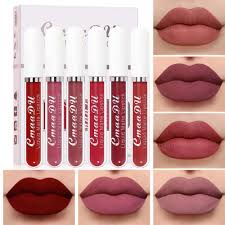
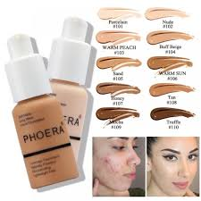
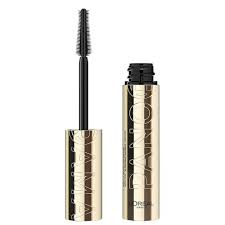

This are some of the makeup products needed for a beginner



Below is a tutorial including a makeup tutorial and skin prep
Makeup is used to enhance a person's natural beauty and improve their appearance.
It includes products such as foundation, lipstick, mascara, and eyeshadow that are applied to the face.
Many people use makeup to boost confidence, express their style, or prepare for special occasions.
When used properly, makeup can highlight facial features and create a polished look.